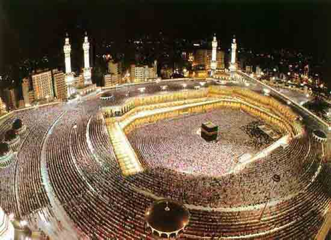

|
|
01. NABI MUHAMMAD (570 SM - 632
SM)

Jatuhnya pilihan saya kepada Nabi Muhammad dalam urutan
pertama daftar Seratus Tokoh yang berpengaruh di dunia
mungkin mengejutkan sementara pembaca dan mungkin jadi tanda
tanya sebagian yang lain. Tapi saya berpegang pada keyakinan
saya, dialah Nabi Muhammad satu-satunya manusia dalam
sejarah yang berhasil meraih sukses-sukses luar biasa baik
ditilik dari ukuran agama maupun ruang lingkup duniawi.
Berasal-usul dari keluarga sederhana, Muhammad menegakkan
dan menyebarkan salah satu dari agama terbesar di dunia,
Agama Islam. Dan pada saat yang bersamaan tampil sebagai
seorang pemimpin tangguh, tulen, dan efektif. Kini tiga
belas abad sesudah wafatnya, pengaruhnya masih tetap kuat
dan mendalam serta berakar.
Sebagian besar dari orang-orang yang tercantum di dalam
buku ini merupakan makhluk beruntung karena lahir dan
dibesarkan di pusat-pusat peradaban manusia, berkultur
tinggi dan tempat perputaran politik bangsa-bangsa. Muhammad
lahir pada tahun 570 M, di kota Mekkah, di bagian agak
selatan Jazirah Arabia, suatu tempat yang waktu itu
merupakan daerah yang paling terbelakang di dunia, jauh dari
pusat perdagangan, seni maupun ilmu pengetahuan. Menjadi
yatim-piatu di umur enam tahun, dibesarkan dalam situasi
sekitar yang sederhana dan rendah hati. Sumber-sumber Islam
menyebutkan bahwa Muhamnmad seorang buta huruf. Keadaan
ekonominya baru mulai membaik di umur dua puluh lima tahun
tatkala dia kawin dengan seorang janda berada. Bagaimanapun,
sampai mendekati umur empat puluh tahun nyaris tak tampak
petunjuk keluarbiasaannya sebagai manusia.
Umumnya, bangsa Arab saat itu tak memeluk agama tertentu
kecuali penyembah berhala Di kota Mekkah ada sejumlah kecil
pemeluk-pemeluk Agama Yahudi dan Nasrani, dan besar
kemungkinan dari merekalah Muhammad untuk pertama kali
mendengar perihal adanya satu Tuhan Yang Mahakuasa, yang
mengatur seantero alam. Tatkala dia berusia empatpuluh
tahun, Muhammad yakin bahwa Tuhan Yang Maha Esa ini
menyampaikan sesuatu kepadanya dan memilihnya untuk jadi
penyebar kepercayaan yang benar.
Selama tiga tahun Muhammad hanya menyebar agama terbatas
pada kawan-kawan dekat dan kerabatnya. Baru tatkala memasuki
tahun 613 dia mulai tampil di depan publik. Begitu dia
sedikit demi sedikit punya pengikut, penguasa Mekkah
memandangnya sebagai orang berbahaya, pembikin onar. Di
tahun 622, cemas terhadap keselamatannya, Muhammad hijrah ke
Madinah, kota di utara Mekkah berjarak 200 mil. Di kota itu
dia ditawari posisi kekuasaan politik yang cukup
meyakinkan.
Peristiwa hijrah ini merupakan titik balik penting bagi
kehidupan Nabi. Di Mekkah dia susah memperoleh sejumlah
kecil pengikut, dan di Medinah pengikutnya makin bertambah
sehingga dalam tempo cepat dia dapat memperoleh pengaruh
yang menjadikannya seorang pemegang kekuasaan yang
sesungguhnya. Pada tahun-tahun berikutnya sementara pengikut
Muhammad bertumbuhan bagai jamur, serentetan pertempuran
pecah antara Mektah dan Madinah. Peperangan ini berakhir
tahun 630 dengan kemenangan pada pihak Muhammad, kembali ke
Mekkah selaku penakluk. Sisa dua setengah tahun dari
hidupnya dia menyaksikan kemajuan luar-biasa dalam hal
cepatnya suku-suku Arab memeluk Agama Islam. Dan tatkala
Muhammad wafat tahun 632, dia sudah memastikan dirinya
selaku penguasa efektif seantero Jazirah Arabia bagian
selatan.
Suku Bedewi punya tradisi turun-temurun sebagai
prajurit-prajurit yang tangguh dan berani. Tapi, jumlah
mereka tidaklah banyak dan senantiasa tergoda perpecahan dan
saling melabrak satu sama lain. Itu sebabnya mereka tidak
bisa mengungguli tentara dari kerajaan-kerajaan yang mapan
di daerah pertanian di belahan utara. Tapi, Muhammadlah
orang pertama dalam sejarah, berkat dorongan kuat
kepercayaan kepada keesaan Tuhan, pasukan Arab yang kecil
itu sanggup melakukan serentetan penaklukan yang
mencengangkan dalam sejarah manusia. Di sebelah timurlaut
Arab berdiri Kekaisaran Persia Baru Sassanids yang luas. Di
baratlaut Arabia berdiri Byzantine atau Kekaisaran Romawi
Timur dengan Konstantinopel sebagai pusatnya.
Ditilik dari sudut jumlah dan ukuran, jelas Arab tidak
bakal mampu menghadapinya. Namun, di medan pertempuran,
pasukan Arab yang membara semangatnya dengan sapuan kilat
dapat menaklukkan Mesopotamia, Siria, dan Palestina. Pada
tahun 642 Mesir direbut dari genggaman Kekaisaran Byzantine,
dan sementara itu balatentara Persia dihajar dalam
pertempuran yang amat menentukan di Qadisiya tahun 637 dan
di Nehavend tahun 642.
Tapi, penaklukan besar-besaran --di bawah pimpinan
sahabat Nabi dan penggantinya Abu Bakr dan Umar ibn
al-Khattab-- itu tidak menunjukkan tanda-tanda stop sampai
di situ. Pada tahun 711, pasukan Arab telah menyapu habis
Afrika Utara hingga ke tepi Samudera Atlantik. Dari situ
mereka membelok ke utara dan menyeberangi Selat Gibraltar
dan melabrak kerajaan Visigothic di Spanyol.
Sepintas lalu orang mesti mengira pasukan Muslim akan
membabat habis semua Nasrani Eropa. Tapi pada tahun 732,
dalam pertempuran yang masyhur dan dahsyat di Tours, satu
pasukan Muslimin yang telah maju ke pusat negeri Perancis
pada akhirnya dipukul oleh orang-orang Frank. Biarpun
begitu, hanya dalam tempo secuwil abad pertempuran,
orang-orang Bedewi ini -dijiwai dengan ucapan-ucapan Nabi
Muhammad- telah mendirikan sebuah empirium membentang dari
perbatasan India hingga pasir putih tepi pantai Samudera
Atlantik, sebuah empirium terbesar yang pernah dikenal
sejarah manusia. Dan di mana pun penaklukan dilakukan oleh
pasukan Muslim, selalu disusul dengan berbondong-bondongnya
pemeluk masuk Agama Islam.
Ternyata, tidak semua penaklukan wilayah itu bersifat
permanen. Orang-orang Persia, walaupun masih tetap penganut
setia Agama Islam, merebut kembali kemerdekaannya dari
tangan Arab. Dan di Spanyol, sesudah melalui peperangan
tujuh abad lamanya akhirnya berhasil dikuasai kembali oleh
orang-orang Nasrani. Sementara itu, Mesopotamia dan Mesir
dua tempat kelahiran kebudayaan purba, tetap berada di
tangan Arab seperti halnya seantero pantai utara Afrika.
Agama Islam, tentu saja, menyebar terus dari satu abad ke
abad lain, jauh melangkah dari daerah taklukan. Umumnya
jutaan penganut Islam bertebaran di Afrika, Asia Tengah,
lebih-lebih Pakistan dan India sebelah utara serta
Indonesia. Di Indonesia, Agama Islam yang baru itu merupakan
faktor pemersatu. Di anak benua India, nyaris kebalikannya:
adanya agama baru itu menjadi sebab utama terjadinya
perpecahan.
Apakah pengaruh Nabi Muhammad yang paling mendasar
terhadap sejarah ummat manusia? Seperti halnya lain-lain
agama juga, Islam punya pengaruh luar biasa besarnya
terhadap para penganutnya. Itu sebabnya mengapa
penyebar-penyebar agama besar di dunia semua dapat tempat
dalam buku ini. Jika diukur dari jumlah, banyaknya pemeluk
Agama Nasrani dua kali lipat besarnya dari pemeluk Agama
Islam, dengan sendirinya timbul tanda tanya apa alasan
menempatkan urutan Nabi Muhammad lebih tinggi dari Nabi
Isa dalam daftar. Ada dua alasan pokok yang jadi
pegangan saya. Pertama, Muhammad memainkan peranan jauh
lebih penting dalam pengembangan Islam ketimbang peranan
Nabi Isa terhadap Agama Nasrani. Biarpun Nabi Isa
bertanggung jawab terhadap ajaran-ajaran pokok moral dan
etika Kristen (sampai batas tertentu berbeda dengan
Yudaisme), St. Paul merupakan tokoh
penyebar utama teologi Kristen, tokoh penyebarnya, dan
penulis bagian terbesar dari Perjanjian Lama.
Sebaliknya Muhammad bukan saja bertanggung jawab terhadap
teologi Islam tapi sekaligus juga terhadap pokok-pokok etika
dan moralnya. Tambahan pula dia "pencatat" Kitab Suci
Al-Quran, kumpulan wahyu kepada Muhammad yang diyakininya
berasal langsung dari Allah. Sebagian terbesar dari wahyu
ini disalin dengan penuh kesungguhan selama Muhammad masih
hidup dan kemudian dihimpun dalam bentuk yang tak
tergoyangkan tak lama sesudah dia wafat. Al-Quran dengan
demikian berkaitan erat dengan pandangan-pandangan Muhammad
serta ajaran-ajarannya karena dia bersandar pada wahyu
Tuhan. Sebaliknya, tak ada satu pun kumpulan yang begitu
terperinci dari ajaran-ajaran Isa yang masih dapat dijumpai
di masa sekarang. Karena Al-Quran bagi kaum Muslimin sedikit
banyak sama pentingnya dengan Injil bagi kaum Nasrani,
pengaruh Muhammad dengan perantaraan Al-Quran teramatlah
besarnya. Kemungkinan pengaruh Muhammad dalam Islam lebih
besar dari pengaruh Isa dan St. Paul dalam dunia Kristen
digabung jadi satu. Diukur dari semata mata sudut agama,
tampaknya pengaruh Muhammad setara dengan Isa dalam sejarah
kemanusiaan.
Lebih jauh dari itu (berbeda dengan Isa) Muhammad bukan
semata pemimpin agama tapi juga pemimpin duniawi. Fakta
menunjukkan, selaku kekuatan pendorong terhadap gerak
penaklukan yang dilakukan bangsa Arab, pengaruh kepemimpinan
politiknya berada dalam posisi terdepan sepanjang waktu.
Dari pelbagai peristiwa sejarah, orang bisa saja berkata
hal itu bisa terjadi tanpa kepemimpinan khusus dari
seseorang yang mengepalai mereka. Misalnya, koloni-koloni di
Amerika Selatan mungkin saja bisa membebaskan diri dari
kolonialisme Spanyol walau Simon Bolivar tak pernah ada di
dunia. Tapi, misal ini tidak berlaku pada gerak penaklukan
yang dilakukan bangsa Arab. Tak ada kejadian serupa sebelum
Muhammad dan tak ada alasan untuk menyangkal bahwa
penaklukan bisa terjadi dan berhasil tanpa Muhammad.
Satu-satunya kemiripan dalam hal penaklukan dalam sejarah
manusia di abad ke-13 yang sebagian terpokok berkat pengaruh
Jengis Khan. Penaklukan ini, walau lebih luas jangkauannya
ketimbang apa yang dilakukan bangsa Arab, tidaklah bisa
membuktikan kemapanan, dan kini satu-satunya daerah yang
diduduki oleh bangsa Mongol hanyalah wilayah yang sama
dengan sebelum masa Jengis Khan
Ini jelas menunjukkan beda besar dengan penaklukan yang
dilakukan oleh bangsa Arab. Membentang dari Irak hingga
Maroko, terbentang rantai bangsa Arab yang bersatu, bukan
semata berkat anutan Agama Islam tapi juga dari jurusan
bahasa Arabnya, sejarah dan kebudayaan. Posisi sentral
Al-Quran di kalangan kaum Muslimin dan tertulisnya dalam
bahasa Arab, besar kemungkinan merupakan sebab mengapa
bahasa Arab tidak terpecah-pecah ke dalam dialek-dialek yang
berantarakan. Jika tidak, boleh jadi sudah akan terjadi di
abad ke l3. Perbedaan dan pembagian Arab ke dalam beberapa
negara tentu terjadi -tentu saja- dan nyatanya memang
begitu, tapi perpecahan yang bersifat sebagian-sebagian itu
jangan lantas membuat kita alpa bahwa persatuan mereka masih
berwujud. Tapi, baik Iran maupun Indonesia yang kedua-duanya
negeri berpenduduk Muslimin dan keduanya penghasil minyak,
tidak ikut bergabung dalam sikap embargo minyak pada musim
dingin tahun 1973 - 1974. Sebaliknya bukanlah barang
kebetulan jika semua negara Arab, semata-mata negara Arab,
yang mengambil langkah embargo minyak.
Jadi, dapatlah kita saksikan, penaklukan yang dilakukan
bangsa Arab di abad ke-7 terus memainkan peranan penting
dalam sejarah ummat manusia hingga saat ini. Dari segi
inilah saya menilai adanya kombinasi tak terbandingkan
antara segi agama dan segi duniawi yang melekat pada
pengaruh diri Muhammad sehingga saya menganggap Muhammad
dalam arti pribadi adalah manusia yang paling berpengaruh
dalam sejarah manusia.
|